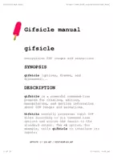
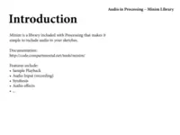
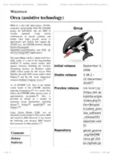
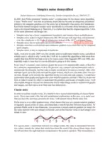
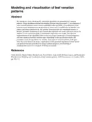
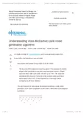
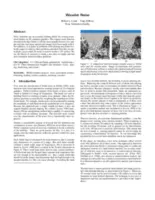

generative art shelf
3D Rendering in Computer Graphics - Patricia Dobbins.pdf
A Companion to Digital Art.pdf
An Evolutionary Architecture - John Frazer.pdf
book of shader.pdf
Cell Noise And Processing.pdf
Code as Creative Medium -A Handbook for Computational Art and Design - Golan Levin, Tega Brain.pdf
Computer Graphics from Scratch A Programmers Introduction to 3D Rendering - Gabriel Gambetta.pdf
Computer Graphics Programming in OpenGL Using C++.pdf
Generative Art - Matt Pearsons.pdf

gifsicle.pdf
GLSL Essentials.pdf
Grokking Algorithms.pdf
Interaction of Color.pdf
Interactive Computer Graphics.pdf
Jim Blinn's Corner - Notation, Notation, Notation.pdf
Learning Processing. A Beginner's Guide to Programming Images, Animation, and Interaction (Morgan Kaufmann Series) - Daniel Shiffman.pdf
Making Music with Computers.pdf
Mastering Open CV with practical computer vision projects.epub
Mathematical Typography.pdf
math of photogrammetry.pdf

minim.pdf
OpenGL 4.0 Shading Language Cookbook.epub

orca.pdf
p5-reference.webpage
pink noise.pdf
Point-based graphics.pdf
Processing - A Programming Handbook for Visual Designers and Artists.pdf
Processing - Creative Coding and Generative Art in Processing - Ira Greenberg, Dianna Xu, Deepak Kumar.pdf
Programming Design Systems.pdf
Radiosity and Realistic Image Synthesis - Morgan Kaufmann.pdf
Shaders for Game Programmers and Artists by Sebastien St-Laurent.pdf

simplexnoise.pdf
SVG Essentials - J. Eisenberg.pdf
Texturing and Modeling, A Procedural Approach.pdf
The Laws of Simplicity.pdf
The Nature of Code - Simulating Natural Systems with Processing - Daniel Shiffman.epub
Topics in the Theory of Random Noise, Volume I General Theory of Rand - R.L. Stratonovich.djvu

venation.pdf
Virtual Muse, Experiments in Computer Poetry (Wesleyan Poetry Series) - Charles I Hartman.pdf
Visualization in Medicine -Theory, Algorithms, and Applications.pdf

voss.pdf

wavelet.pdf
white noise filtered to pink.pdf
 - Daniel Shiffman.webp "Learning Processing. A Beginner's Guide to Programming Images, Animation, and Interaction (Morgan Kaufmann Series) - Daniel Shiffman")


 - Charles I Hartman.webp "Virtual Muse, Experiments in Computer Poetry (Wesleyan Poetry Series) - Charles I Hartman")